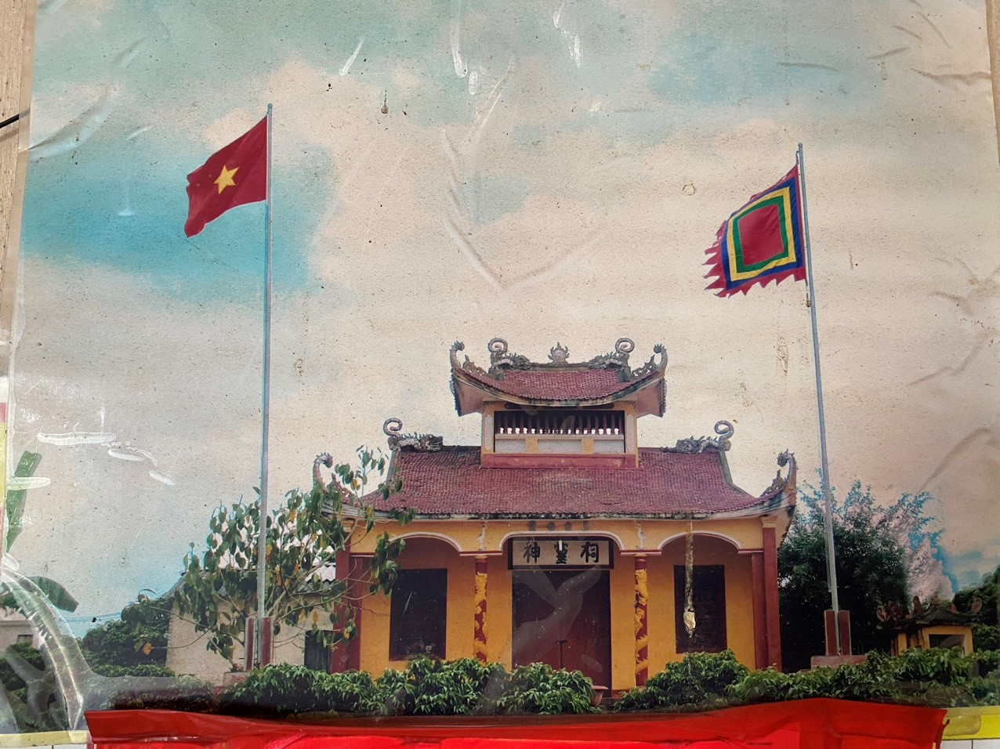
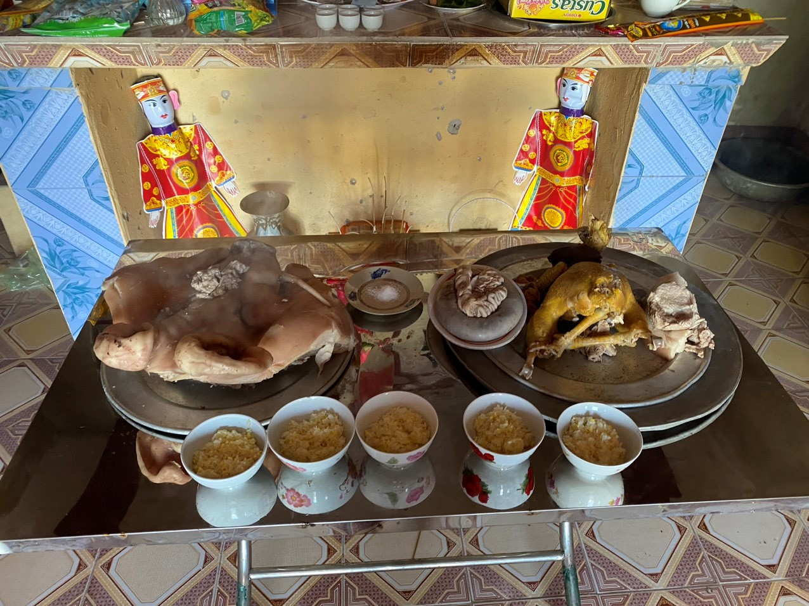
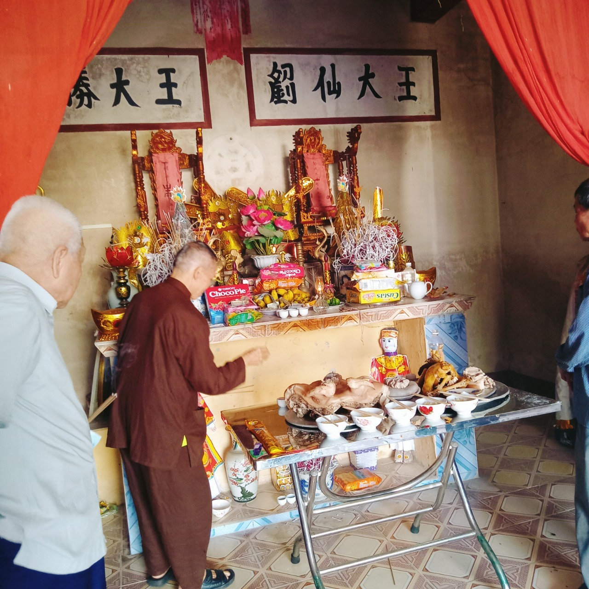
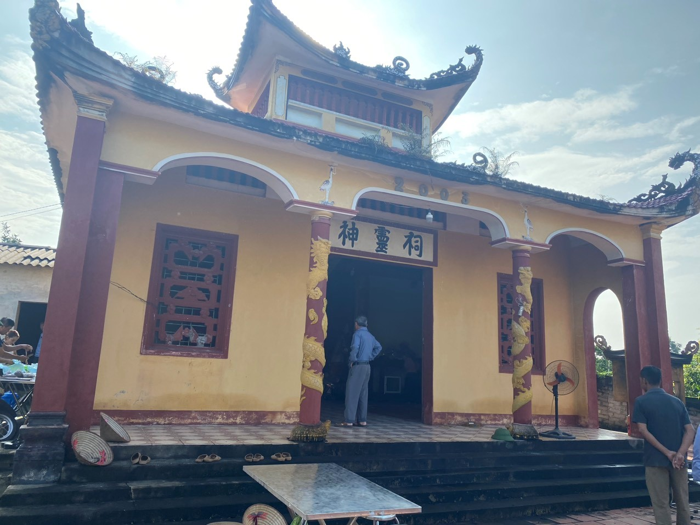
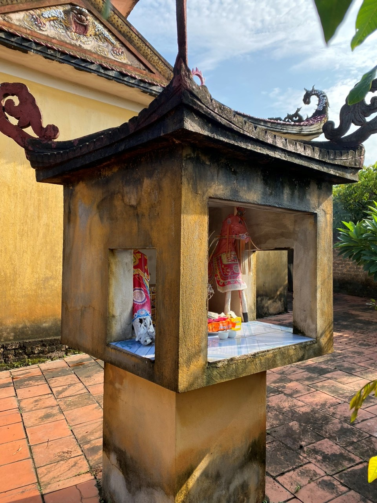
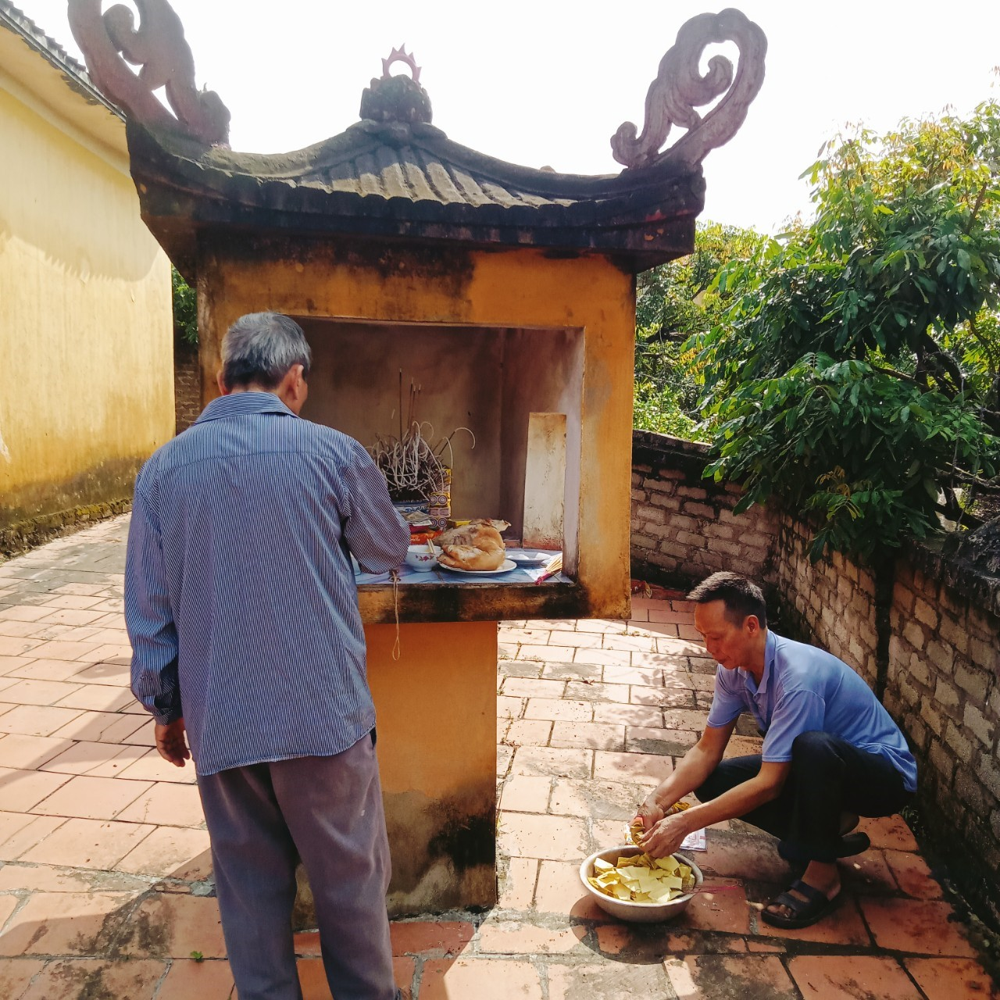
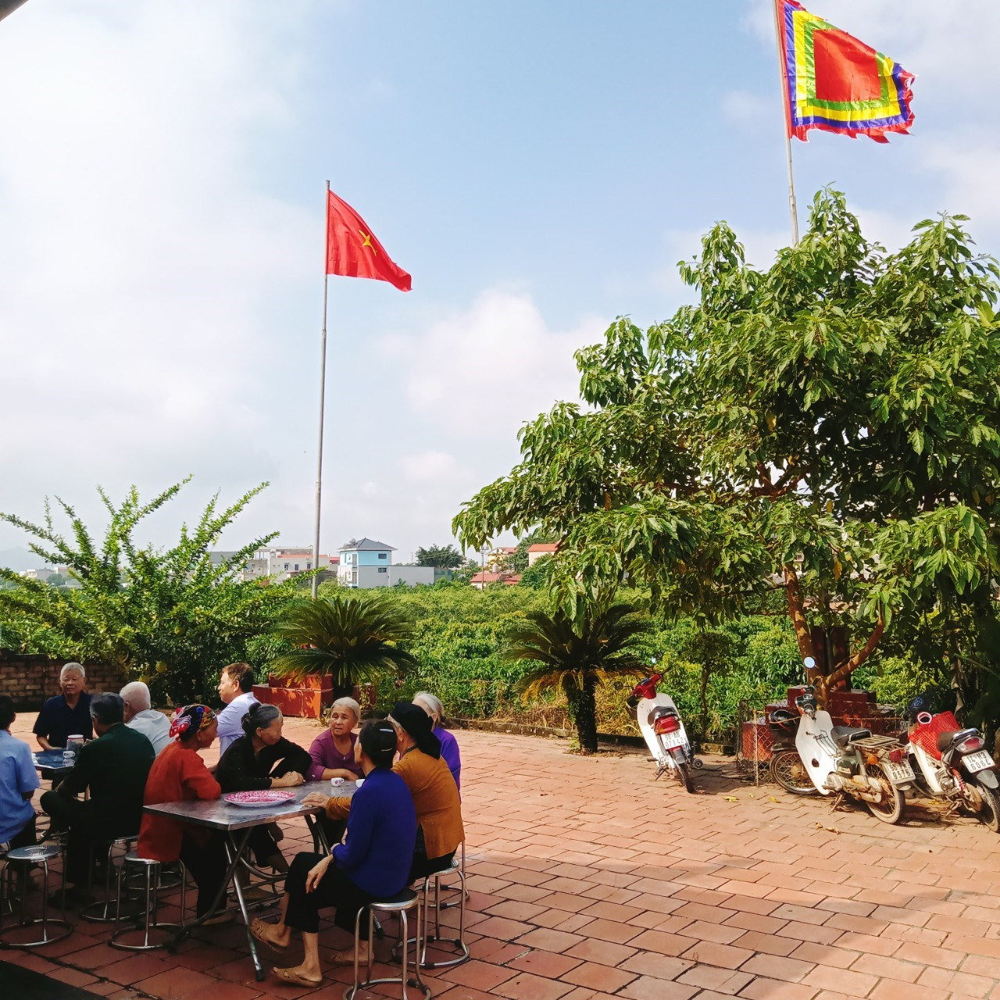
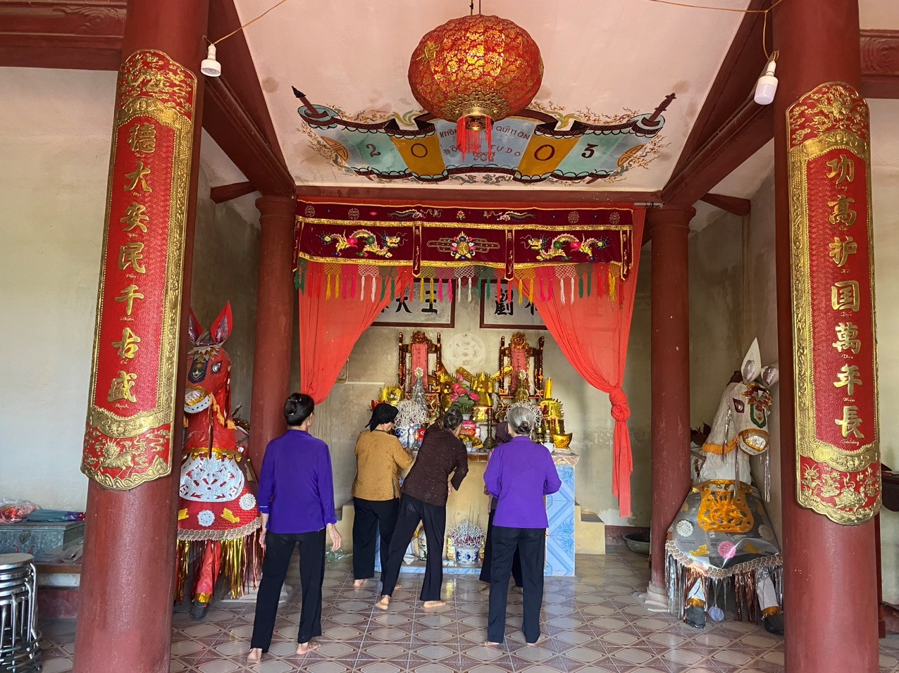

Di tích cổ Đình thôn Chính
1. Lịch sử hình thành Đình thôn Chính
Đình làng thôn Chính là một khu di tích tín ngưỡng được xây dựng từ năm 1865 lưu truyền đến đời nay. Là nơi để lớp lớp các thế hệ người dân thôn Chính tâm linh hướng thiện, khơi dậy tinh thần đoàn kết hướng về cội nguồn và thể hiện tấm lòng cao cả đối với tổ tiên.
Đình thôn Chính
Lịch sử thôn Chính và đình thôn Chính được người dân thôn Chính lưu truyền rằng: Cuối thế kỷ 19 (khoảng năm 1865 – 1866) có ông quan Thương Tri phủ đóng đô ở Cá ngự xã Phục lạp ngày xưa (hiện nay là thôn Kim Thạch, xã Thanh Hải). Ông quan Thương đến Quảng Ninh thấy số người nghèo đói ở núi Vàng Danh (còn gọi là núi Ống Bơ thuộc huyện Quảng Hà – Quảng Ninh). Ông đã chiêu dân về núi Trúc hội tụ làm ăn sinh sống bằng nghề nông, không có nghề gì khác. Theo nhận định của ông quan Thương: Núi Trúc địa thế đẹp, thuận tiện việc làm ăn. Lúc đầu chỉ có 6 hộ dân với 30 nhân khẩu cùng sinh sống và lấy tên là làng Tân Lâm. Cùng với sự phát triển của lịch sử, nhất là sau khi Đảng ra đời, thôn Tân Lâm ngày càng phát triển. Đến năm 1942, thôn Tân Lâm có tất cả 22 hộ và 112 nhân khẩu. Bà con nhân dân trong thôn luôn phát huy truyền thống tương thân tương ái của dân tộc Việt Nam, đoàn kết một lòng xây dựng thôn Tân Lâm và sau này đổi tên thành thôn Chính.
Cùng với sự ra đời và phát triển của thôn Chính, đình thôn Chính cũng được xây dựng từ năm 1865. Tương truyền khi thôn Tân Lâm (tức thôn Chính ngày nay) được hình thành, người dân trong thôn rất cảm kích trước công lao to lớn của 2 ông quan trong triều khi ấy là ông Trịnh Thắng và ông Lưu Thiện – Hai ông đã được vua Khải Định ban sắc vì có công với đất nước. Người dân thôn Chính đã xây dựng ngôi Đình này trên khu đất thôn Chính hiện nay để thờ 2 vị quan và lấy tên 2 ông tôn làm thần Hoàng làng. Cầu mong thần Hoàng làng che chở cho nhân dân trong thời kì loạn lạc, cầu mong dân làng con cháu được bình yên, cầu mong trên thuận dưới hòa. Cũng từ đó đình làng thôn Chính là nơi bà con nhân dân trong thôn tâm linh hướng thiện, là nơi làm lễ cầu cho mưa thuận gió hòa, cầu mùa màng bội thu, cầu cho người dân được cơm no, áo ấm. Cũng từ đó hằng năm nhân dân thôn Chính lấy ngày mồng 4 Tết là ngày làm lễ dâng hương lên thần Hoàng làng và cứ đến rằm tháng 8 là làm lễ ăn cơm mới cầu và mừng mùa thu hoạch bội thu.
Mâm lễ cúng ngày 15/8 ( Âm lịch)
Người dân làm lễ cúng ăn cơm mới
Đình làng thôn Chính được xây dựng từ năm 1865 song không được duy tu, sửa chữa thường xuyên. Cùng với những thăng trầm của lịch sử, Đình thôn Chính có thời gian bị xuống cấp, đổ nát. Dưới thời phong kiến và đế quốc, nhân dân thôn Chính cũng giống như nhân dân cả nước chịu ách nô lệ sưu cao, thuế nặng, một cổ đôi tròng, do vậy không có điều kiện để tôn tạo Đình, Chùa.
Năm 1990, khi cuộc sống đã bớt cơ cực, nhân dân thôn Chính thống nhất xây dựng lại ngôi Đình trên nền đất cũ. Kinh phí lúc đó còn hạn hẹp nên ngôi Đình được trình tường lợp ngói. Tuy ngôi Đình còn đơn sơ, song đã đáp ứng được lòng mong mỏi của nhân dân. Ngôi Đình từ đó lại trở nên ấm cúng bởi tấm lòng người dân thôn Chính luôn hướng về nguồn cội. Theo thời gian năm tháng, ngôi Đình tường đất lại xuống cấp, lòng người dân lại trăn trở khôn nguôi.
Đến năm 2003, Với truyền thống “uống nước nhớ nguồn” của dân tộc Việt Nam, được sự thống nhất của cấp ủy, chi bộ và ban mặt trận, nhân dân thôn Chính đã tiến hành xây dựng lại ngôi Đình bằng bê tông, cốt thép kiên cố khang trang ngay trên nền đình cũ với tổng giá trị trên 70 triệu đồng, bằng nguồn kinh phí 100% do nhân dân thôn Chính đóng góp công đức.
Xây dựng lại ngồi đình làng to đẹp kiên cố là ước nguyện bao đời của nhân dân thôn chính nay đã thành hiện thực. Đình làng thôn Chính thật sự là mái nhà chung để người dân thôn Chính tâm linh hướng thiện, để nhớ cội nguồn, nhớ công ơn những người có công với nước, với làng. Để tình làng nghĩa xóm ngày càng thêm gắn bó keo sơn để truyền thống đoàn kết, cần cù chăm chỉ làm ăn, truyền thống hiếu học của người dân thôn chính được truyền tụng mãi đến muôn đời con cháu mai sau.
(Giáp Văn Thịnh – Bí thư Đoàn xã Hồng Giang tổng hợp)
2. Một số hình ảnh về Đình thôn Chính:
 Ban thờ Ông Địa
Ban thờ Ông Tiên
 Người dân đến làm lễ cúng cơm mới ở Đình thôn Chính: